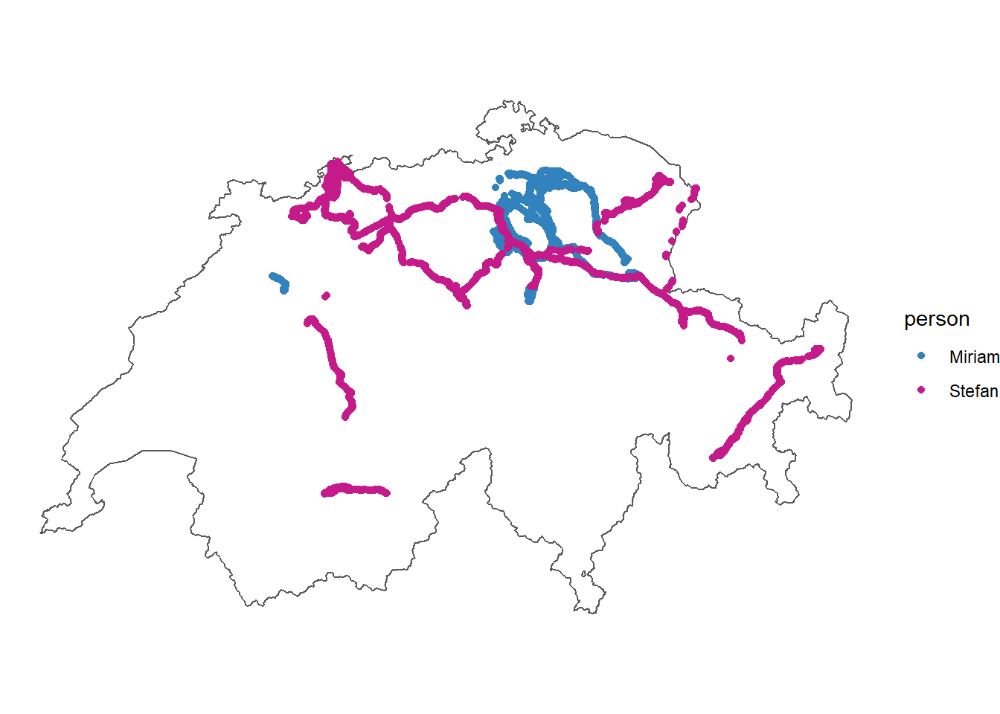

Wartezeit an ÖV-Haltestellem beim Reisebeginn
1 Hintergrund und Forschungsziele
(Zeit ist Geld (Effizienzsteigerung) versus Bewusst und Entspannt durchs Leben gehen ->Literatur, Öv CH superpünktlich, geringe Wartezeiten bzw Wartezeit selbstverschuldet)
Passagiere empfinden in der Regel das Warten an Haltestellen des Öffentlichen Verkehrs (ÖV) als äusserst lästig (van Hagen 2011). Die Schweizer ÖV sind international bekannt für ihre Pünktlichkeit (Kaindl 2022), wodurch die Länge der Wartezeit zu Beginn einer Reise meist selbstverschuldet ist. Nach Csiskos & Currie (2008) gibt es zwei verschiedene Arten von Fahrgastverhalten: Eine Gruppe kommt zufällig an, während eine andere Gruppe aktiv versucht, ihre Wartezeit zu minimieren, indem sie rechtzeitig zur geplanten Abfahrtszeit bei der Haltestelle ankommt. Evtl. Blabla zu AnalyseWerkzeugen, how fast is a cow und so.. oder erst in Diskussion
In unserer Projektarbeit möchten wir unsere tägliche Wartezeit an Haltestellen von öffentlichen Verkehrsmitteln (ÖV) untersuchen. Dabei wird ausschliesslich der Beginn einer Reise betrachtet. Folgende Fragen sollen anhand zweier leicht unterschiedlicher Methoden beantwortet werden:
- Wie oft reisen wir mit den ÖV?
- Sind die Wartezeiten pro Person von Reise zu Reise unterschiedlich lang?
- Wer verbringt durchschnittlich mehr Wartezeit an den Haltestellen?
- Kommen unsere beiden methodischen Herangehensweisen zu den gleichen Resultaten?
2 Methode
2.1 Daten
Die Daten bestehen aus eigenen Bewegungsdaten, welche mit der Applikation Posmo Project (Datamap AG, Version 22.01.16, 2023) erfasst wurden. Daten wurden vom 03.05.23 bis 21.06.23 mit einer Frequenz der Lokalisierungsdaten von 10 Sekunden aufgenommen. Fand keine deutliche Bewegung statt, wurden die Datenpunkte durch Posmo automatisch entfernt. Diese Daten liegen als CSV-Datei vor und beinhalten u.a. Datum & Zeit („datetime”), x-Koordinaten („long_x”), y-Koordinaten („lat_y”) und Transportmodus („transport_mode”).
Code
### R: Daten einlesen
# Daten von Stefan (ab 29.04.2023)
stefan <- read_delim("posmo_Stefan_23-05-03_06-21.csv", delim = ",")
head(stefan)# A tibble: 6 × 7
user_id datetime weekday place…¹ trans…² lon_x lat_y
<chr> <dttm> <chr> <chr> <chr> <dbl> <dbl>
1 d081d87a-d5b5-42fc-ac… 2023-05-02 22:00:00 Wed Alpthal <NA> 8.70 47.1
2 d081d87a-d5b5-42fc-ac… 2023-05-03 03:21:27 Wed <NA> Walk 8.70 47.1
3 d081d87a-d5b5-42fc-ac… 2023-05-03 03:21:27 Wed <NA> Walk 8.70 47.1
4 d081d87a-d5b5-42fc-ac… 2023-05-03 03:21:41 Wed <NA> Walk 8.70 47.1
5 d081d87a-d5b5-42fc-ac… 2023-05-03 03:21:57 Wed <NA> Walk 8.70 47.1
6 d081d87a-d5b5-42fc-ac… 2023-05-03 03:22:11 Wed <NA> Walk 8.70 47.1
# … with abbreviated variable names ¹place_name, ²transport_modeCode
stefan$person <- "Stefan"
# Daten von Miriam (ab xx.05.2023)
miriam <- read_delim("posmo_Miriam_23-05-03_06-21.csv", delim = ",")
miriam$person <- "Miriam"
# Schweizergrenze für Visualisierung
schweiz <- read_sf("schweiz.gpkg")
# Daten zusammenführen
posmo <- rbind(stefan, miriam)
# nicht relevante Spalten entfernen
posmo <- posmo |>
select(-user_id, -weekday, -place_name)
# NA finden & entfernen
# posmo[!complete.cases(posmo), ] # Zeigt Zeilen mit NA an
posmo <- drop_na(posmo)# Spalten mit NA entfernen
# Geometrie hinzufügen
posmo <- posmo |>
st_as_sf(coords = c("lon_x", "lat_y"), crs = 4326, remove = FALSE) |> # Geometrie hinzufügen
st_transform(2056) # transformieren CH1903+ LV95: 2056
# Schweizer Koordinaten zu sf-Tabelle hinzufügen
posmo_coordinates <- st_coordinates(posmo)
posmo <- cbind(posmo, posmo_coordinates)
# WGS Koordinaten entfernen
posmo <- posmo |>
select(-lon_x, -lat_y)
# Daten anschauen, Trajectories
# ggplot(posmo, aes(X, Y, color = person))+
# geom_path()+
# coord_equal()+
# scale_color_manual(values = c("Miriam" = "#3182bd", "Stefan" = "#c51b8a"))+
# theme_void()
Zusätzlich wird der Datensatz „Haltestellen des öffentlichen Verkehrs” vom Bundesamt für Verkehr (BAV) verwendet (QUELLE https://data.geo.admin.ch/ch.bav.haltestellen-oev/haltestellen-oev/haltestellen-oev_2056_de.csv.zip), welcher alle ÖV-Haltestellen beinhaltet.
2.2 Datenvorverarbeitung
Die Posmo-App ist noch in der Entwicklung und zeichnet die Transportmodi nicht immer korrekt auf. Die Daten wurden deshalb von uns auf POSMO (datamap.io) überprüft und falls nötig die Transportart von Hand angepasst.
2.3 Methode
2.3.1 Ansatz «Geschwindigkeit»
Um den Start einer Reise zu finden, werden die Daten auf eine bestimmte Abfolge von Bewegungen (Segmente) durchsucht. Zu Beginn darf keine Bewegung stattfinden, man ist zum Beispiel zu Hause oder bei der Arbeit. Dafür muss zwischen zwei Datenpunkten eine Zeitdifferenz über dem gewählten Schwellenwert von zehn Minuten liegen.
Erklärung: Annahme dass nicht länger als 10 min gewartet wird
Die restlichen Datenpunkte werden anhand der Geschwindigkeit in Segmente mit langsamer oder schneller Bewegung eingeteilt. Als langsam werden Bewegungen kleiner als 45 km/h klassifiziert. Bewegungen gleich oder grösser als 45 km/h werden als schnell klassifiziert.
Um den Start einer Reise zu finden, muss folgende Abfolge der Segmente vorliegen:
- keine Bewegung (Person über längere Zeit (difftime >10 min) am selben Ort)
- langsame Bewegung (Gehen/Fahrrad)
- schnelle Bewegung (ÖV)
Die Wartezeit kann anschliessend für alle gefundenen Events berechnet werden (difftime (min(Segment schnell), max(Segment langsam))).
Die räumlichen Startpunkte der Reisen wurden mit den ÖV-Haltestellen aus dem Datensatz „Haltestellen des öffentlichen Verkehrs” validiert, wodurch Reisen mit dem Auto wegfallen. Dafür wurde ein Buffer von 100 Metern um ÖV-Haltestellen mit den Positionsdaten der Wartezeit verschnitten. Die verbleibenden Datenpunkte geben die für uns relevanten Events an.

Einige ÖV-Haltestellen werden dabei öfters benutzt als andere.

2.3.2 Ansatz «Transportmodus»
Um zu validieren, wie gut unsere geschwindigkeitsabhängige Methode funktioniert, machen wir eine zusätzliche Analyse mit den Angaben der Transportmodi von Posmo.
Erklärung: Annahme dass nicht länger als 10 min gewartet wird
R: T: Ansatz “Transportmodus”
R: T: Einteilung stay/slow/public
Dabei werden die Daten auf eine bestimmte Abfolge anhand des angegebene Transportmodus durchsucht.
- keine Bewegung (Person über längere Zeit (difftime >10 min) am selben Ort)
- Transportmodus Walk/Bike
- Transportmodus Bus/Train/Tram
Die Wartezeit kann anschliessend für alle gefundenen Events berechnet werden (difftime (min(Segment schnell), max(Segment langsam))).
R: T: Evente finden
[1] "datetime_slow" "transport_mode_slow" "person_slow"
[4] "X_slow" "Y_slow" "time_slow"
[7] "Moving_slow" "moving_class_slow" "id"
[10] "datetime_public" "transport_mode_public" "person_public"
[13] "X_public" "Y_public" "time_public"
[16] "Moving_public" "moving_class_public" 3 Resultate
Die beiden Verfahren haben eine unterschiedliche Anzahl Events ergeben. Gemäss dem Ansat”Geschwindigkeit” haben wir zusammen 60 (Ansatz “Geschwindigkeit”), bzw. 85 (Ansatz “Transportmodus”) Reisen mit dem ÖV gemacht. Miriam macht 0.51 (Ansatz “Geschwindigkeit”), bzw 0.67 (Ansatz “Transportmodus”) ÖV-Reisen pro Tag. Stefan macht 0.71 (Ansatz “Geschwindigkeit”), bzw 1.06 (Ansatz “Transportmodus”) ÖV-Reisen pro Tag.
Beim Ansatz “Geschwindigkeit” ergeben sich folgende Resultate: Miriam wartet im Mittel rund 3.1 Minuten, während Stefan im Mittel rund 1.9 Minuten wartet. Die Wartezeiten sind von Reise zu Reise unterschiedlich lange. Bei Miriam beträgt die Standardabweichung 2.9 und bei Stefan 2.2.
# A tibble: 2 × 6
person Mittelwert Minimum Maximum Standardabweichung Bereich
<chr> <dbl> <dbl> <dbl> <dbl> <dbl>
1 Miriam 3.01 0.08 9.85 2.88 9.77
2 Stefan 1.92 0.23 7.52 2.20 7.29Beim Ansatz “Geschwindigkeit” ergeben sich folgende Resultate: Miriam wartet im Mittel rund 3.3 Minuten, während Stefan im Mittel rund 2.6 Minuten wartet. Die Wartezeiten sind von Reise zu Reise unterschiedlich lange. Bei Miriam beträgt die Standardabweichung 2.8 und bei Stefan 2.7.
# A tibble: 2 × 6
person Mittelwert Minimum Maximum Standardabweichung Bereich
<chr> <dbl> <dbl> <dbl> <dbl> <dbl>
1 Miriam 3.32 0.0167 8.35 2.76 8.33
2 Stefan 2.61 0.0333 9.65 2.71 9.62Text: wer wartet länger
T-Test für Ansatz “Geschwindigkeit”
Two Sample t-test
data: wartezeit by person
t = 1.6571, df = 58, p-value = 0.1029
alternative hypothesis: true difference in means between group Miriam and group Stefan is not equal to 0
95 percent confidence interval:
-0.2263252 2.4030109
sample estimates:
mean in group Miriam mean in group Stefan
3.005200 1.916857 T-Test für Ansatz “Geschwindigkeit”
Two Sample t-test
data: wartezeit_minutes by person
t = 1.1706, df = 83, p-value = 0.2451
alternative hypothesis: true difference in means between group Miriam and group Stefan is not equal to 0
95 percent confidence interval:
-0.4970964 1.9191632
sample estimates:
mean in group Miriam mean in group Stefan
3.316162 2.605128 Text: Wartekategorien

Text: Interaktive Karte
R: T: Visualisierung
[1] 2.881176 Group.1 x
1 Miriam 3.316162
2 Stefan 2.605128 Group.1 x
1 Miriam 8.35
2 Stefan 9.65 Group.1 x
1 Miriam 0.01666667
2 Stefan 0.03333333 Min. 1st Qu. Median Mean 3rd Qu. Max.
0.01667 0.16667 3.00000 2.88118 5.01667 9.65000 


4 Diskussion
Probleme und Grenzen:
Bei der Herangehensweise «Geschwindigkeit» sich durch das setzen des Schwellenwerts für die Geschwindigkeit ein Problem. Wird der Schwellenwert zu tief gesetzt, können Bewegungen auf dem Weg zu der Haltestelle bereits als schnelle Bewegung eingestuft werden, obwohl wir diese als langsame Bewegungen haben möchten. Ein Beispiel: Stefan geht oft mit dem Fahrrad zur ÖV-Haltestelle und erreicht dabei Geschwindigkeiten über 40 km/h. Deshalb wurde der Schwellenwert auf 45 km/h gesetzt. Nun kann es aber sein, dass das öffentliche Verkehrsmittel beim Start der Reise langsam fährt und diese Bewegung als langsame Bewegung eingestuft wird. Dies hat zur Folge, dass sich die Wartezeit auf 15 Sekunden, also die Zeit zwischen zwei Datenpunkten beschränkt und nicht der Wahrheit entspricht. Die Daten werden verfälscht.
Bei der Herangehensweise «Klassifizierung» sind wir auf die Qualität von Posmo angewiesen. Den Transportmodus können wir manuell anpassen, die Segmente sind aber relativ fix (Erfahrungen haben gezeigt, dass die Funktion «split segment» nicht einwandfrei funktioniert). Es kam einige Male vor, dass langsame und schnelle Bewegungen am Start einer Reise als ein Segment dargestellt wurde. Der Transportmodus war dann entweder Bus, Train oder Tram. Da dadurch eine Segment der Transportmodus Walk oder Bike fehlte, wurde auch kein Start einer Reise erkannt. Dies ist ein Verlust eines Datenpunktes aber keine Verfälschung der Daten.
Aufgrund der Frequenz der Lokalisierung, können die Wartezeiten nur auf 10 Sekunden genau sein.
Die Herangehensweise «Geschwindigkeit» zeigt auf, dass die Transportmodi nicht einzig aufgrund deren Geschwindigkeit eingeteilt werden können. Die Daten werden verfälscht und können nicht interpretiert werden. Die Herangehensweise «Klassifizierung» ergibt deutlich bessere Daten. Bei diesem Vorgehen waren wir aber darauf angewiesen, dass wir bereits vorgegebene Segmente hatten und diese nur noch klassifizieren oder validieren mussten. Dies ist Zeitintensiv und für grössere Datensätze nicht denkbar. So können auch nur Daten bearbeitet werden, wovon man weiss, welcher Transportmodus verwendet wurde.
Um die Auswertung auch auf grössere und fremde Datensätze auszuweiten, wäre eine Verbesserung der Erkennung des Transportmodus von Vorteil. Busse und Trams wurden zum Beispiel immer als Autos klassifiziert. Hierfür wäre vielleicht ein Abgleich mit Datensätzen des öffentlichen Verkehrs möglich. Zudem gab es manchmal Segmente, bei welchen der Transportmodus als unbekannt gesetzt wurde. Dennoch würde eine entsprechende Fragestellung, welche sich nur auf den Zugdaten (inkl. Walk und Bike) bezieht bereits mit der jetzigen Erkennung der Transportmodi relativ gut funktionieren.
5 Literatur
Csikos, D., & Currie, G. (2008). Investigating Consistency in Transit Passenger Arrivals: Insights from Longitudinal Automated Fare Collection Data. Transportation Research Record, 2042(1), 12–19. https://doi.org/10.3141/2042-02
Kaindl, F. (2022). Reisen mit der Bahn: In welchen Ländern die Züge besonders pünktlich sind. Merkur.de https://www.merkur.de/reise/zuege-puenktlich-fernverkehr-bahn-europa-schweiz-daenemark-niederlande-zr-91977341.html#:~:text=In%20der%20Schweiz%20fahren%20Z%C3%BCge%20am%20p%C3%BCnktlichsten%20Am,viele%20Gedanken%20%C3%BCber%20Versp%C3%A4tungen%20innerhalb%20des%20Landes%20machen.